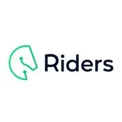
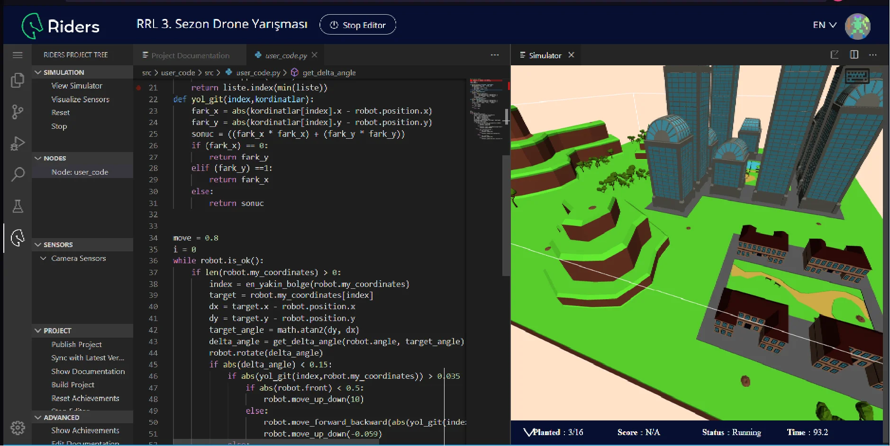
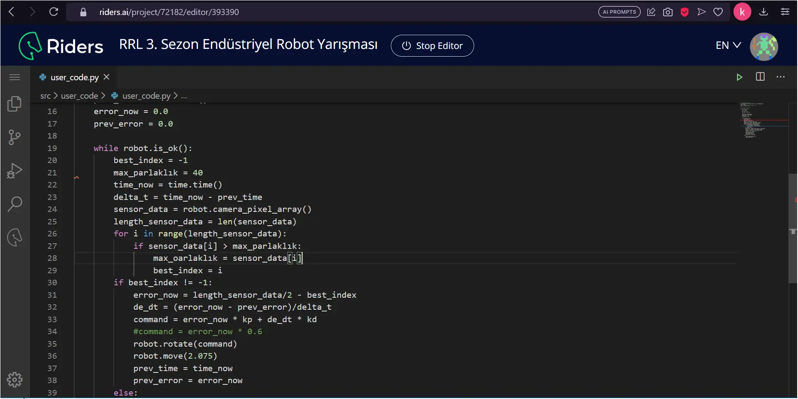

FRC California
Silicon Valley
When I came San Francisco/California, I would have to go Silicon Valley especialy Apple Main Center. Had chance to visit Apple's massive center and even talk with an Apple technician ,which is from Turkey, about this gorgeus building and working opportunuties.He told me that for Apple's hiring standarts is not includes University diploma.I had been suprized for all day cause in Turkey companies and hiring workers cares it too much. So I suprized, but I did not came Silicon Valley just for Apple Center. I had chance to see nearly all big companies like Google, Intel, Netflix, Facebook etc. Generally I thought that Silicon Valley as a massive building :D. But it's almost an city.(An important information: when we go to see Netflix's building, they asked that do we have allow or rezervation. We suprized and sayed that we do not have allow or rezervation.The worker expel us outside of building so we couldn't seen Netflix's building :D)
Stanford University
It's from Stanford University. I had traveled all around the Campus and I love it! When I talk with myself like hope I can accept by such a school like that, I met someone who is a teacher in Stanford University field in Physics again from Turkey. I had proud with my country again and again. He showed us Every single place in the campus and nearly region But the most important thing that I had opportunity to own, What is important in order to accept by Stanford.He gave me So valuable knowledge comes from years of experience. Soo one more thing, I had chance to met some group of people who studing in Stanford. I asked they my questions and they easly answer it.It was just perfect.Hope one day I accepted such a beatiful school like Stanford.
Our Robot
Of course the main topic of America travel is competition. So we had hard times of building robot.Because mostly team members were new and tring to learn what have to do. Those responsible for making robots were less in number like approximately me and my older friend. Unluckly we were poor team comes cause we are just new and anatolian high school and goverment doesn't financialy helped. We had to make the things and it was just us and our mentor Teacher Ali Kemal Alemdaroğlu. Soo that time we learned many things cause we have competitions but we dont have money also we had to represent our country in the America on best way.We did our best for this by going to fairs and making our name known and finding sponsors, and we finally succeeded.When we came to the end, all we got from the 6-month adventure was the sense of achievement. We succeeded regardless of the opportunities we had and we would represent our country in America. We were very excited. Then we boarded the plane.
we succesfuly landed in the United states Of America. Had discovered enviroment near area and people of course.Finally competition day came up.We set up our robot and got ready for the competition. We had ran all the pit for met our teammates.Talked about creativ tactics for win. We had many matches and of course wons and lostes.Final chart is 39th in The oregon and not just that. We had a prize name of team spirit.It was important cause just a couple of team won prize soo its important for us.
Riders competition
  What is Riders ?
Competition consist of 3 stage name of drone, robotic arm and line tracker. In order of stages, first contest drone competition, game logic is start drone and make it plant 16 herb fastest I can done with code.Code language is nearly python but logic is kinda different cause riders engineers created the language. I want you to examine the code so you could understand. I'll add robotic arm codes and simulation to examine.
What we have done ?
On the original website indroduce they self like: Riders is an educational platform where you can experience the technologies of the 21st century, especially robotics, artificial intelligence and machine learning, with real-world simulations and find content based on STEM principles. So to put it briefly Riders provide us improving and developing our skills about robotics,image processing,algorithm etc. I'm also interested on coding,IP and artifical intelligence so I said myself "Kerem you have to be in such a project" so I'm here. So I'm going to put a simple example about codes and which tasks we had complete succesfully and also that our missions and finish times of course. So click the content name of software for all the details.
TeknoFest
Our team history
This content includes our Teknofest team Mantas's achievemnts and also my teammates. Firstly, My team consist of 4 team member in order of me, Aral Efe Mermer, Mustafa Abat and Ahmet Enes Akkaş. I met with they also in Baykar and become teammates for Teknofest. This year we have attended 2 different catogories name of "International Unmanned Aerial Aircraft" and "autonomous underwater vehicles." and we had succesfully finished the projects. I writed info about the projects that we attended.
Teknofest's vision and general information
The festival, which was held in Istanbul for the first time in 2018, is held every two years in Istanbul and every two years in one of the Anatolian provinces.[1]It is open to the public and free of charge. It is organized by the Turkish Technology Team Foundation and the Ministry of Industry and Technology. It aims to develop Turkey's national technologies.[2][3] Within the scope of the festival, seminars, award-winning technology competitions, domestic technology exhibitions, international entrepreneurship summits are organized; parachuting, Solo Türk, Turkish Stars and similar local-international organizations air shows. The festival is held one year in Istanbul and one year in one of the Anatolian provinces.
Projects under process
UAV
I used to make some rotary wing UAV's specialy quad and hexacopters, In addition, with our innovative technology in the fixed wing category, we managed to create the first unmanned vertical fixed wing Combat plane.We even going to share the files with the whole world in a few weeks.Get ready to the first autonamous vertical landing UAV that created by Flight Master Technologies.
Sponsors Section
Why I need sponsors?
I do all my projects myself and no matter how hard I try, unfortunately I cannot receive government support. I need sponsors to continue my projects and be a sensitive citizen of my country.
Which components that I need?
----------------------
1 x Mamba f405 wing flight control card : $190.
5 x Brusheless 1400kv motor : $78.
5 x 30A ESC : $78.
1 X Radio : $480.
1 X Receiver with 10 channel : $20.
1 X Carbon Fiber Plane Frame : $800.
1 X Lipo battery 5000mah 4s 40c : $50.
1 X RF900 Telemetry : $1314.
1 X Gps module : $21.
Therefore, I need sponsors and supporters. dream it to come trueVoluntaries
What is Volunteer Tourism Delegate?
Our Tourism Delegates, who take part in the project, in which a total of 450 young people, 350 of whom are principal and 100 are substitutes, are selected every year as a result of written and oral interviews; It provides free guide services to tourists in Sultanahmet, Hagia Sophia, Yerebatan, Divanyolu, Grand Bazaar and Eminönü regions, in English, Spanish, German, Arabic, French, Persian, Korean, Japanese, Chinese, Italian and Russian languages. At the end of the project, participation certificates are given to young people aged between 16 and 30, who serve with t-shirts with "Ask Me/Ask Me" in various languages on them.
T3 AI Software
T3 AI is Turkey's first artificial intelligence language model. At the same time, despite being so new, it is shown as the 4th most important artificial intelligence model in the world. In this project, we work entirely on a voluntary basis and try to take artificial intelligence technology one step further together with the masters of the field. I still work as a volunteer and try to contribute everything I can to both myself and the project.
Baykar
History and general information of BAYKAR
Baykar is a Turkey-based machinery manufacturing and defense company. It was established under the name of Baykar Makina by Özdemir Bayraktar in 1986 to serve the automotive industry in the manufacture of precision engine, pump and gearbox parts subject to localization. The name of the company is the abbreviation of Bayraktar Brothers. Since 2000, with the participation of the second generation engineers of the family (Haluk and Selçuk), R&D studies have been started in this field with unmanned aerial vehicle (UAV) technologies in the defense and aviation world within Baykar. The company is also one of Teknofest's stakeholders.
R&D team of 3500+ people from different sectors (engineers, technicians and technicians), Flight Control Systems, Mission Computer Systems, Automatic Landing and Takeoff center and engineering disciplines, fixed-wing and rotary-wing unmanned aerial vehicle production facilities and different class studies are continuing. . . to create. . Systems, Command Control and Interface Systems, Electromechanical Servo Actuator, Electric Power Units etc. systems are designed with electronic hardware, software and structural features and produced as boutiques as a result of prototype and test stages. (Vikipedia)
.webp)
What is my job there?
Rather than a job, what I do is to receive training in design, advanced robotics, computer learning, nanotechnology, material science, space and aviation and many other fields. I go to Baykar part time and get training.
Events I attended
TUA First Turkish Astronaut
I've been in "5. gece" for our first space travel to international space station.I met the astronaut and did not forget to ask the Minister of Industry and Space for help with my robotic team while I was there. It was wonderfull night. Thanks a lot to Habertürk and all guests especialy Prof. dr. Arif Karabeyoğlu for education of liquid and hybrid rocket fuel.
'Anıtkabir' and Tusaş
I have been in Ankara for two reason.I met the savior of the Turkey, then went 'Tusaş' to watch their plane show and carefully examine the planes that have been made and will be made
Protocol meeting
I received an E-mail that tolds I have an invitation to attend protocol Meeting at Baykar.I excited and went to see. Then I met Education minister Mr.Mahmut Özer and take a long trip inside to company again. It was awsome and met many engineer.
İnnovate youth Program
This photo is from the innovative youth program that I attended and received the certificate for. In fact, I supported the event I attended with Advanced Smoke Detector not only as a project but also as music. We had fun playing cajon and acoustic guitar at the event, in which the Governor also participated.
Kocaeli informatics valley
As part of the Deneyap trip, I went to Kocaeli IT Valley, got involved with many technological products, from flying cars to service robots, and got answers to the questions I asked. Thank you to the T3 team for this perfect day.
6G Conferance
I attended the 6G conference through my cousin. He said that they were organizing an event in my field of interest and that it would be nice if I attended. Of course I attended. I listened to many seminars, asked questions and received answers. I also had the chance to play with a robot dog and it was a lot of fun. 6G will be a very different and magnificent technology. Internet signals will now reach everywhere where light enters. 6G technology will come very soon and shake up the world.
Take off
In order to go to America, we needed to find our own sponsors, not just build robots, and we thought that the way to do this would be with the take-off event organized by the T3 foundation and we went to Istanbul Technical University. In fact, to put it simply, take off is an investment finding event for startup companies. Our reason for joining was to find our own sponsors from the big companies there, and we not only achieved our goal but also promoted our team and school on national news channels.